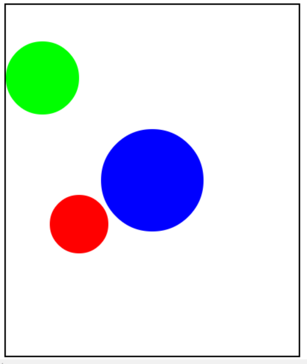

This is an example that we did in the video.
You are encouraged to play around with it, to see how it all works.
When you are done, click the arrow to go to the next problem.
這是我們在視頻中做了一個榜樣。我們鼓勵你玩它，看看它是如何工作的。當你完成後，單擊箭頭進入下一個問題。

/* Write a function to draw a circle,given
* a radius, color, and x and y position
* for the center.
*/
function drawCircle(radius, color, x, y){
var circle = new Circle(radius);
circle.setColor(color);
circle.setPosition(x, y);
add(circle);
}
function start(){
drawCircle(40, Color.red, 100, 300);
drawCircle(50, Color.green, 50, 100);
drawCircle(70, Color.blue,
getWidth()/2, getHeight()/2);
}
/*寫一個函數來畫一個圓，因為
*半徑，顏色，x和y位置
*為中心。
*/
函數繪製圓（半徑，顏色 x, y){
變圓=新圓（半徑）;
圈子。設置顏色（彩色）;
圈子。設置的位置(x, y);
加（圈）;
}
函數的開始（）{
繪製圓(40, 顏色。紅, 100, 300);
繪製圓(50, 顏色。綠色, 50, 100);
繪製圓(70, 顏色。藍色,
得到寬()/2, 得到高度()/2);
}